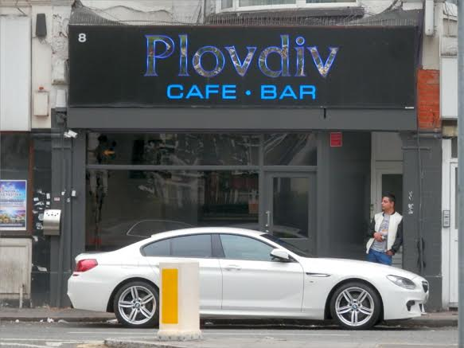

Monday, May the 30th, 2016
back to: title, date or indexes
It is far too long since we turned our attention to the fair city of Plovdiv. Word reaches me, however, of the intriguing appearance of a supposed watering-hole in north London, pictured below. I say “supposed” because, reportedly, nobody has ever been seen either entering or leaving this mysterious establishment. My hunch is that it is some kind of portal to Plovdiv. Boffins are probably hard at work tweaking the complicated gubbins designed to rend asunder the laws of physics so that, on stepping through the door, one is instantly transported—teleported?—to Plovdiv itself.

Many thanks to Max Décharné for the snap.